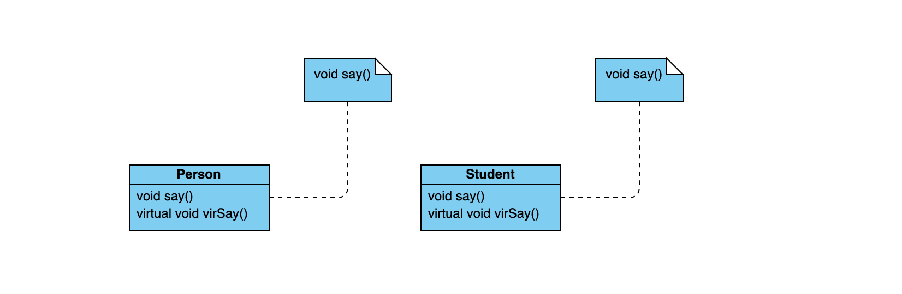

多态性可以简单的概括为 "一个接口，多种方法"，它是面向对象编程语言的核心。
1. 什么是多态
在编程语言中，多态就意味着某些代码、操作或对象在不同的上下文中有不一样的作用。C++分为两种类型的多态
- 编译时多态性 (静态多态)：通过重载函数实现
- 运行时多态性 (动态多态)：通过虚函数实现
我们定义如下几个类：
1 | class Person { |
1 | class Student : public Person { |
然后，我们执行如下命令：
1 | int main() { |
得到如下输出：
1 | Derived:: I am a student. |
我们可以看到Student对象的输出是正常的，但是我们将Student对象向上转换为Person的时候，它的非虚函数调用的是父类的函数。
这里，有一个概念就是类的成员函数存储的问题，设想一下每个类都包括数据和函数两个部分，如果同一个类定义了10个对象，那么我们就要为10个对象分配内存
但是，每个对象的函数都是相同的，所以我们可不可以让这10个对象公用一份函数呢？答案当然是可以的，c++中将函数单独存储出去，当我们调用相应的函数的时候，一定是通过一个对象实例去调用的，每个对象实例都有一个this指针，所以不同的对象实例调用的时候，传入的是不同的this指针，this指针起到访问数据的作用。
所以，上面的代码 p->say() 之所以会输出：Base:: I am a person. 就是因为它的内存结果如下所示：

除了虚函数,决定调用哪一个函数的过程在编译期就已经完成了。每一个成员函数的第一个参数都应为this,这是编译器生成的。所有类成员函数和非成员函数代码存放在代码区。
静态成员函数和非静态成员函数都是在类的定义时放在内存的代码区的，因而可以说它们都是属于类的，但是类为什么只能直接调用静态类成员函数，而非静态类成员函数(即使函数没有参数)只有类对象才能调用呢？
原因是类的非静态类成员函数其实都内含了一个指向类对象的指针型参数(即this指针)，因而只有类对象才能调用(此时this指针有实值)。
2. 虚函数
虚函数的地址被存储一张叫做虚表的东西里，虚函数表的地址总是存在于对象实例中最前面的位置，其后依次是对象实例的成员。
虚函数的存储原理与成员函数是一致的，如果你对函数进行了重写，那么就会指向重写的函数地址，否则所有的对象共用相同的地址。
另外我们在使用虚函数的时候要注意：
- 静态函数不可以声明为虚函数 ：静态函数不属于任一实例，因此将其声明为虚函数也没有意义 。
- 构造函数不可以声明为虚函数 ：除了 inline 之外，构造函数不允许使用其它任何关键字。构造函数是用来创建实例的，被创建的实例必须有明确的类型，因此构造函数不能是虚函数 。
- 析构函数可以声明为虚函数：事实上，只要一个类有可能会被其它类所继承， 就应该声明虚析构函数，因为我们可能也需要动态确定被销毁对象的实际类型 。
2.1. 单继承（只有一个父类）
类的继承关系为：class Derived : public Base
若子类并无overwrite父类虚函数，而是声明了自己新的虚函数，则该虚函数地址将扩充到虚函数表最后。
若子类overwrite父类虚函数，同样地将覆盖父类子物体中的虚函数表对应位置，而若子类声明了自己新的虚函数，则编译器将为子类增加一个新的虚表指针vptr，这与一般继承不同,在后面再讨论。
2.2. 多重继承（多个父类）
类的继承关系如下：class Derived : public Base1, public Base2
在多继承中，子类含有多个父类的子对象，该往哪个父类的虚函数表扩展呢？
- 子类的虚函数被放在声明的第一个基类的虚函数表中。
- overwrite时，所有基类的print()函数都被子类的print()函数覆盖。
- 内存布局中，父类按照其声明顺序排列。
2.3. 重复继承（继承的多个父类中其父类有相同的超类）
类的继承关系如下：
class Base1 : public Base
class Base2: public Base
class Derived : public Base1, public Base2
这就是菱形继承，派生类对象中拥有多份基类实例。
一个属于来源B1类，一个来源B2类。这样不仅增大了空间，更重要的是引起了程序歧义。
2.4. 虚继承
虚继承解决了菱形继承中最派生类拥有多个间接父类实例的情况。虚继承的派生类的内存布局与普通继承很多不同，主要体现在：
虚继承的子类，如果本身定义了新的虚函数，则编译器为其生成一个虚函数指针（vptr）以及一张虚函数表。该vptr位于对象内存最前面。
3. 纯虚函数
在很多情况下，基类本身生成对象是不合情理的。例如，动物作为一个基类可以派生出老虎、孔雀等子类，但动物本身生成对象明显不合常理。而针对每种动物的方法又有所不同，此时需要使用多态特性，也就需要在基类中定义虚函数。
纯虚函数是在基类中声明的虚函数，它要求任何派生类都要定义自己的实现方法，以实现多态性。实现了纯虚函数的子类，该纯虚函数在子类中就变成了虚函数。